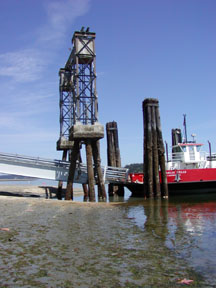
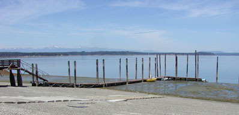

June 4th, 2004 Low Tides

Minus 4.3 feet at 1:18 PM. The tide at 8:46 PM was plus 15.6 feet, almost a 20-foot difference!
Our entire small boat dock was high and dry. The last time we had tides this low was on June 22, 1986.

Return to the Main Photo Page
Return to the HMC Home Page